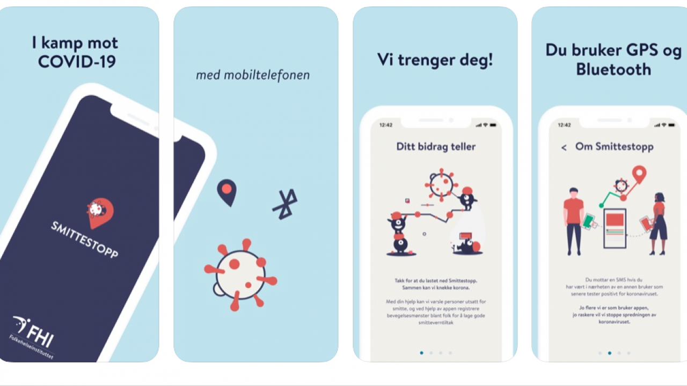
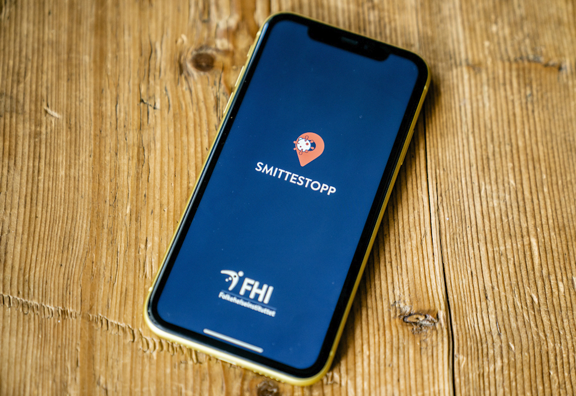

FOR-argumenter
MOT-argumenter
Den manuelle metoden for å spore smitte er ressurskrevende, og det krever
også mye kapasitet fra helsetjenesten. I tillegg er det også vanskelig for de smittede
å huske alle de har vært i nærheten av i en gitt periode.
Appen er batterikrevende, og det er et åpent spørsmål om hvor mange folk som
faktisk vil gjøre det samme over en lang periode.
En slik app krever fokus på personvern og informasjonssikkerhet. Derfor er det helt frivillig
å laste ned appen, og før den lastes ned skal tydelig og fullstendig informasjon bli vist.
Dette tiltaket har mange utfordringer for personvern. Det omfatter helseopplysninger med potensielt
alvorlige konsekvenser for andre og personen selv dersom hackere får tak i den informasjonen.
Personvernrådet sier i en samlet erklæring at personvernforordningen ikke hindrer tiltak som
kan bekjempe coronavirus-epidemien. Dette er kun lovlig dersom det er et nødvendig, egnet og forholdsmessig
tiltak.
Dataen som blir lagret blir oppbevart sentralt og bare opp til 30 dager.
Drøfting og konklusjon om lanseringsappen
Det er mye snakk om denne sporingsappen som kan forhindre koronasmitte. Noen mener at den bør bli lansert,
mens andre mener at den ikke bør det. I denne teksten skal jeg redegjøre for og deretter drøfte problemstillingene.
Det viktigste argumentet for denne appen er at det er nødvendig å lansere den for å slippe å bruke den manuelle metoden
for å spore smitte (Folkehelseinstituttet 2020c). Folket kan derfor hindre seg selv å bli smittet ved å se hvor andre folk har vært eller er.
På den andre siden kan denne appen være farlig for folket på grunn av
personvern, men det er viktig å tenke på at vi er i en pandemi. Derfor kan vi ikke la være å prøve nye tiltak i denne
situasjonen. Dessuten er dette bare ett av flere utviklingstiltak (Erik Thon 2020a)(Gundersen 2020b). Selv om vi prøver nye
tiltak som kan redusere smitte så kan vi ikke risikere å sette folket i andre alvorlige konsekvenser. Dette er sant, men
dessuten forteller personvernrådet at personvernforordningen ikke hindrer tiltak som kan bekjempe coronavirus-epidemien, men
likevel er det viktig at det gjøres på en transparent måte. Det er flere som jobber med å begrense de negative
personvernkonsekvensene så mye så mulig.

Hva hadde jeg gjort hvis jeg hadde vært beslutningstaker?
Jeg godkjenner denne appen dersom det kommer fram en løsning som kan gjøre hentingen av
personvernopplysningen gjennomsiktig. Dette er for å hindre hacking av personlig informasjon. I tillegg om det er frivillig å laste ned appen slik folket har mulighet for å velge
selv. Denne appen er en god idé for å tenke på kapasiteten hos helsetjenesten, for dersom det blir for mange som blir smittet så vil dette
overstige den begrensede kapasiteten. Dette vil gjøre det vanskelig for alle sammen, for eksempel, Italia som har en mangel på
respiratorer og kan ikke hjelpe de som trenger hjelp umiddelbart. Derfor bidrar denne appen med å hjelpe folket med å spore opp
andre i nærheten for så å holde seg unna dem
